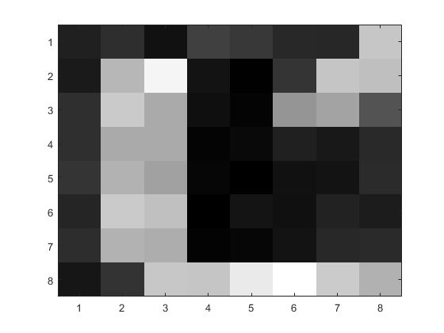
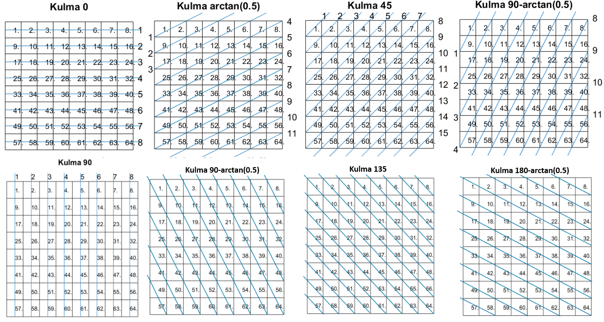

Inverse Problems · Computational Imaging
This computational imaging project investigated the basic principles of tomography by reconstructing an image from gamma-ray attenuation measurements. An unknown object was represented using an 8 × 8 pixel grid. The attenuation coefficient of each pixel was estimated from measurements collected along multiple projection paths using least-squares estimation and regularisation methods.
| Project | Data Analysis Course Project |
| University | University of Eastern Finland |
| Status | Completed |
| Duration | 2023–2024 |
| Programming Language | MATLAB |
| Imaging Source | Americium-241 Gamma-Ray Source |
| Image Resolution | 8 × 8 pixels |
| Main Topics |
Inverse Problems Tomographic Reconstruction Regularisation |

Tomographic imaging reconstructs the internal structure of an object from measurements collected along several projection directions. In this project, gamma radiation was transmitted through a measurement target and the remaining radiation was recorded using a detector.
The target was divided into 64 pixels. Each measurement was modelled as a combination of the path lengths travelled through the pixels and their unknown attenuation coefficients.
The resulting inverse problem was solved using least-squares estimation. Because incomplete projection data produced ill-conditioned observation matrices, regularisation methods were used to improve solution stability and image quality.
The attenuation measurements were collected from several projection angles around the imaging target. Each gamma ray travelled through multiple pixels, and the distance travelled inside each pixel determined its contribution to the observation matrix used for image reconstruction.
Eight different projection directions were used to improve the conditioning of the inverse problem and increase reconstruction accuracy.

The attenuation measurements were represented using a linear observation model in which the unknown vector contained the attenuation coefficient of each pixel. The observation matrix described the distance travelled by each gamma ray inside each pixel.
With limited projection data, the observation matrix became poorly conditioned. This made the direct least-squares solution sensitive to measurement noise and resulted in unstable or unclear reconstructions.
Tikhonov regularisation was used to constrain the solution and reduce the amplification of measurement errors. A first-order difference matrix was also tested to penalise large differences between neighbouring parameter values.
The regularised reconstructions were compared with the ordinary least-squares solution and with reconstructions generated from observation matrices of different conditioning.
The internal structure of the measurement target could be reconstructed from the gamma-ray attenuation measurements. Reconstructions based on limited or poorly distributed data were visibly affected by matrix ill-conditioning.
Regularisation improved the stability and interpretability of the reconstructed images. The project also demonstrated that explicitly modelling the surrounding plastic shell affected the estimated attenuation distribution and allowed the shell's attenuation coefficient to be estimated.
The project provided practical experience in formulating and solving an inverse imaging problem. It demonstrated how measurement geometry, matrix conditioning and regularisation affect the stability and spatial quality of reconstructed images.